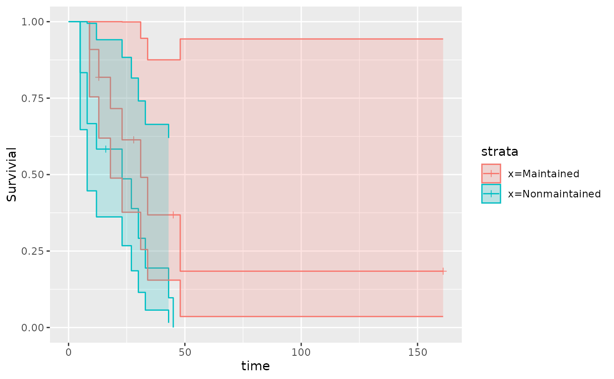
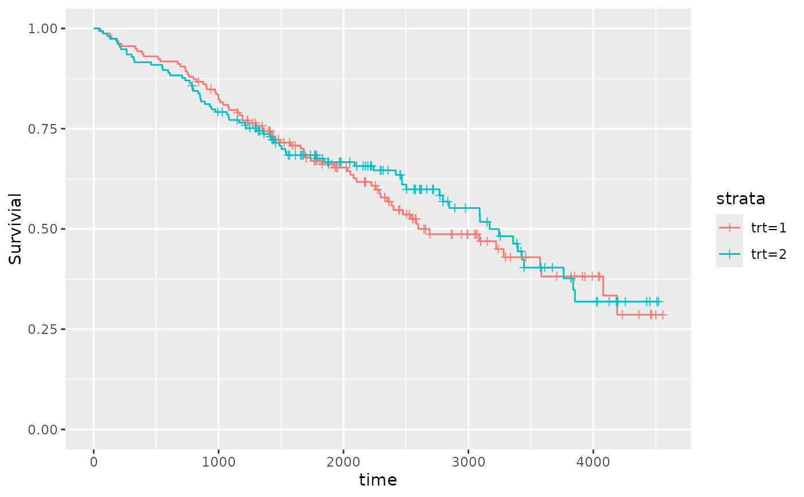
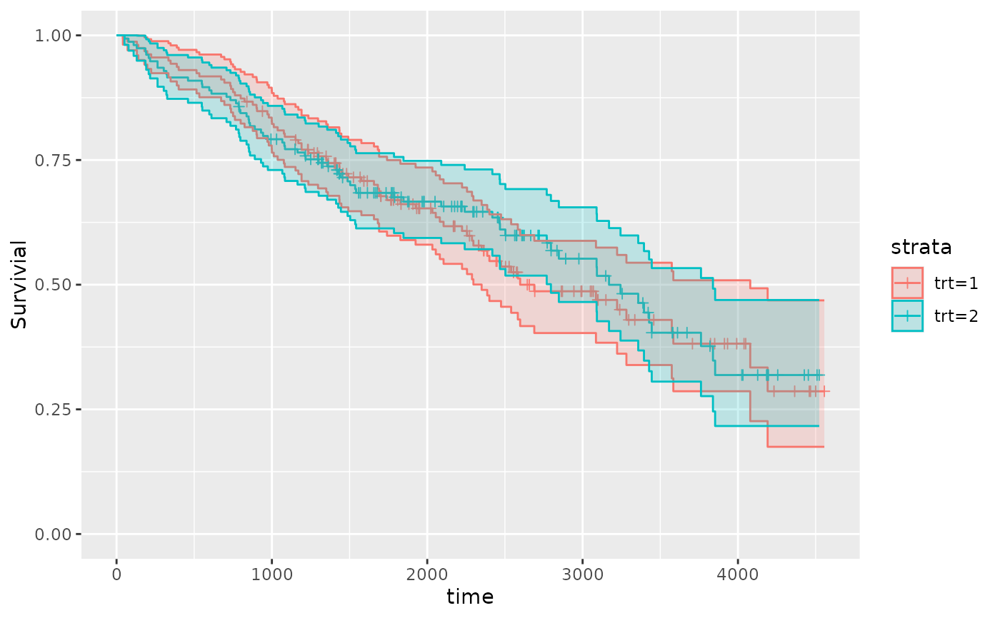

A ggplot2 version of a Kaplan-Meier Plot
Usage
qkmplot(x, conf_int = FALSE, ...)
qkmplot_bulid_data_frame(x)
# S3 method for class 'survfit'
qkmplot_bulid_data_frame(x)
qrmst(x, tau = Inf)
# S3 method for class 'survfit'
qrmst(x, tau = Inf)
# S3 method for class 'qkmplot_data'
qrmst(x, tau = Inf)Details
Functions to build, explicitly or implicitly, data.frames and then creating a ggplot2 KM plot.
More details and examples for graphics within qwraps2 are in the vignette(“qwraps2-graphics”, package = “qwraps2”)
Examples
require(survival)
#> Loading required package: survival
leukemia.surv <- survival::survfit(survival::Surv(time, status) ~ x, data = survival::aml)
qkmplot(leukemia.surv, conf_int = TRUE)
#> Warning: Removed 1 row containing non-finite outside the scale range
#> (`stat_step_ribbon()`).

qkmplot_bulid_data_frame(leukemia.surv)
#> time n.risk n.event n.censor surv upper lower strata
#> 2 0 11 0 0 1.00000000 1.0000000 1.00000000 x=Maintained
#> 3 9 11 1 0 0.90909091 1.0000000 0.75413385 x=Maintained
#> 4 13 10 1 1 0.81818182 1.0000000 0.61924899 x=Maintained
#> 5 18 8 1 0 0.71590909 1.0000000 0.48842629 x=Maintained
#> 6 23 7 1 0 0.61363636 0.9991576 0.37686706 x=Maintained
#> 7 28 6 0 1 0.61363636 0.9991576 0.37686706 x=Maintained
#> 8 31 5 1 0 0.49090909 0.9455850 0.25485995 x=Maintained
#> 9 34 4 1 0 0.36818182 0.8752607 0.15487712 x=Maintained
#> 10 45 3 0 1 0.36818182 0.8752607 0.15487712 x=Maintained
#> 11 48 2 1 0 0.18409091 0.9435258 0.03591790 x=Maintained
#> 12 161 1 0 1 0.18409091 0.9435258 0.03591790 x=Maintained
#> 1 0 12 0 0 1.00000000 1.0000000 1.00000000 x=Nonmaintained
#> 13 5 12 2 0 0.83333333 1.0000000 0.64703699 x=Nonmaintained
#> 14 8 10 2 0 0.66666667 0.9946254 0.44684608 x=Nonmaintained
#> 15 12 8 1 0 0.58333333 0.9409980 0.36161371 x=Nonmaintained
#> 16 16 7 0 1 0.58333333 0.9409980 0.36161371 x=Nonmaintained
#> 17 23 6 1 0 0.48611111 0.8833192 0.26751825 x=Nonmaintained
#> 18 27 5 1 0 0.38888889 0.8157357 0.18539653 x=Nonmaintained
#> 19 30 4 1 0 0.29166667 0.7408220 0.11483115 x=Nonmaintained
#> 20 33 3 1 0 0.19444444 0.6642237 0.05692155 x=Nonmaintained
#> 21 43 2 1 0 0.09722222 0.6195486 0.01525653 x=Nonmaintained
#> 22 45 1 1 0 0.00000000 NA NA x=Nonmaintained
qrmst(leukemia.surv) # NaN for rmst.se in Nonmaintained strata as last observation is an event
#> strata rmst rmtl rmst.se tau
#> x=Maintained x=Maintained 27.79773 17.20227 4.935448 45
#> x=Nonmaintained x=Nonmaintained 18.22222 26.77778 NaN 45
qrmst(leukemia.surv, 44)
#> strata rmst rmtl rmst.se tau
#> x=Maintained x=Maintained 27.42955 16.57045 4.916218 44
#> x=Nonmaintained x=Nonmaintained 18.31944 25.68056 4.183813 44
# pbc examples
pbc_fit <-
survival::survfit(
formula = survival::Surv(time, status > 0) ~ trt
, data = pbc
, subset = !is.na(trt)
)
qkmplot(pbc_fit)

qkmplot(pbc_fit, conf_int = TRUE)

qrmst(pbc_fit)
#> strata rmst rmtl rmst.se tau
#> trt=1 trt=1 2755.835 1767.165 138.3484 4523
#> trt=2 trt=2 2811.100 1711.900 142.7538 4523
qrmst(pbc_fit)
#> strata rmst rmtl rmst.se tau
#> trt=1 trt=1 2755.835 1767.165 138.3484 4523
#> trt=2 trt=2 2811.100 1711.900 142.7538 4523